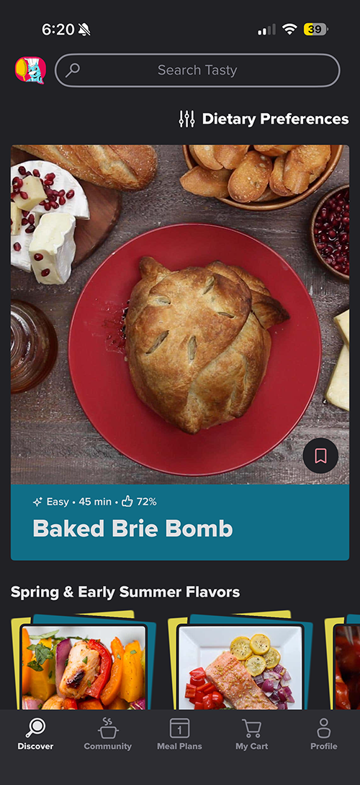
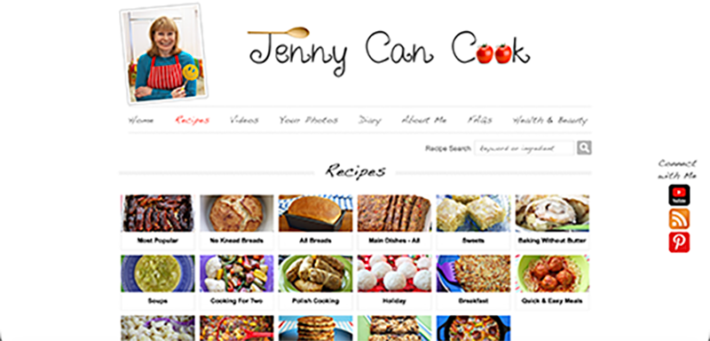

The BuzzFeed Tasty app is a digital cookbook that provides users with recipes, video tutorials, ingredient lists, and step-by-step instructions, with a focus on convenience, speed, and broad accessibility. While Tasty presents recipes as practical tools for convenience, quick consumption, and replication, it lacks the storytelling and cultural context that give food deeper meaning. In contrast, my project treats recipes as living archives of memory, heritage, and identity, designed to preserve family traditions for future generations. Unlike Tasty’s standard static scrolling interface, my website uses a lazy Susan-inspired scrolling animation that brings dishes onto the screen, creating a more immersive and symbolic experience that reflects the communal act of sharing food and emphasizes cultural connection rather than efficiency alone.

Jenny Can Cook’s online cookbook is similar to my project in that it emphasizes homemade cooking and reflects the creator’s personal connection to food, including family-inspired recipes and cultural influences such as Polish heritage. However, its primary focus is on sharing healthy, simple, and practical recipes that make home cooking easier for a broad audience. In contrast, my project centers specifically on cultural preservation and intergenerational storytelling, treating recipes as personal archives of family memory and identity. While Jenny Can Cook uses a straightforward, instructional layout focused on accessibility, my project creates a more immersive experience through a lazy Susan-inspired scrolling interaction that symbolically reflects gathering around the table, transforming recipe browsing into an act of cultural connection and remembrance rather than simply instruction.
